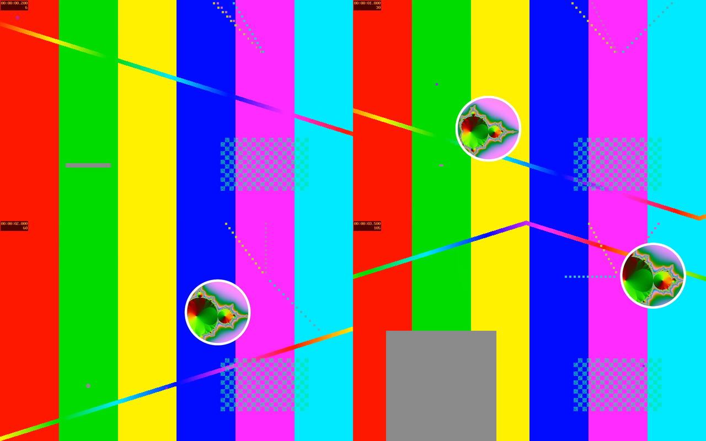

Your face, after the fact
Orbit records the screen and the camera as separate files and remembers where the circle was. In the editor you can replay your path, pin the circle somewhere new, resize it, mirror it, or hide it — then export one MP4.

Exact 1080p framing
Record the whole screen or draw a frame. The 16:9 lock snaps to exact steps, so a selected area comes out at precisely 1920×1080 at a constant 60 fps — no black bars, no stretching.

Stays on your Mac
Recordings go to ~/Movies/Orbit. There's no account, no upload, and no viewer analytics. If you work with client or patient data, that's the whole point.